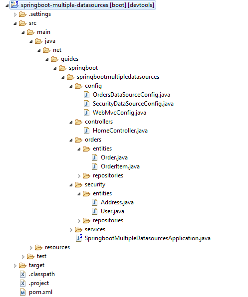

In this article, we will learn how to configure multiple data sources and connect to multiple databases in a typical Spring Boot web application.
We will create a Spring boot project to demonstrate how to configure multiple data sources and connect to multiple databases.
As we know that Spring Boot autoconfiguration works out of the box if you have a single database to work with and provides plenty of customization options through its properties. But if your application demands more control over the application configuration, you can turn off specific auto-configurations and configure the components by yourself.
In this article, we will learn step-by-step how to use multiple databases in the same application. If we need
to connect to multiple databases, we need to configure various Spring beans like DataSources,
TransactionManagers, EntityManagerFactoryBeans, DataSourceInitializers, etc., explicitly.
We will build a Spring Boot web application where the security data has been
stored in one database and
order-related data has been stored in another database.
Let's see how we can work with multiple databases in Spring Boot and use the Spring Data JPA-based application.
There are many ways to create a Spring Boot application. The simplest way is to use Spring Initializr at http://start.spring.io/, which is an online Spring Boot application generator.
Generate: Maven ProjectJava Version: 17 (Default)Spring Boot: 3.0.4Group: net.guides.springbootArtifact: springboot-multiple-datasourcesName: springboot-multiple-datasourcesDescription: Rest API for a Simple User Management ApplicationPackage Name : net.guides.springboot.springbootmultipledatasourcesPackaging: jar (This is the default value)Dependencies: Web, JPA, H2, DevToolsOnce, all the details are entered, then click on Generate Project button will generate a spring boot project and downloads it. Next, Unzip the downloaded zip file and import it into your favorite IDE.
<?xml version="1.0" encoding="UTF-8"?>
<project xmlns="http://maven.apache.org/POM/4.0.0"
xmlns:xsi="http://www.w3.org/2001/XMLSchema-instance"
xsi:schemaLocation="http://maven.apache.org/POM/4.0.0 http://maven.apache.org/xsd/maven-4.0.0.xsd">
<modelVersion>4.0.0</modelVersion>
<groupId>net.guides.springboot</groupId>
<artifactId>springboot-multiple-datasources</artifactId>
<version>0.0.1-SNAPSHOT</version>
<packaging>jar</packaging>
<name>springboot-multiple-datasources</name>
<description>Demo project for Spring Boot</description>
<parent>
<groupId>org.springframework.boot</groupId>
<artifactId>spring-boot-starter-parent</artifactId>
<version>3.0.4</version>
<relativePath /> <!-- lookup parent from repository -->
</parent>
<properties>
<project.build.sourceEncoding>UTF-8</project.build.sourceEncoding>
<project.reporting.outputEncoding>UTF-8</project.reporting.outputEncoding>
<java.version>17</java.version>
</properties>
<dependencies>
<dependency>
<groupId>org.springframework.boot</groupId>
<artifactId>spring-boot-starter-test</artifactId>
<scope>test</scope>
</dependency>
<dependency>
<groupId>org.springframework.boot</groupId>
<artifactId>spring-boot-devtools</artifactId>
<optional>true</optional>
</dependency>
<dependency>
<groupId>org.springframework.boot</groupId>
<artifactId>spring-boot-configuration-processor</artifactId>
<optional>true</optional>
</dependency>
<dependency>
<groupId>org.springframework.boot</groupId>
<artifactId>spring-boot-starter-data-jpa</artifactId>
</dependency>
<dependency>
<groupId>org.springframework.boot</groupId>
<artifactId>spring-boot-starter-web</artifactId>
</dependency>
<dependency>
<groupId>org.springframework.boot</groupId>
<artifactId>spring-boot-starter-thymeleaf</artifactId>
</dependency>
<dependency>
<groupId>com.mysql</groupId>
<artifactId>mysql-connector-j</artifactId>
</dependency>
<dependency>
<groupId>com.h2database</groupId>
<artifactId>h2</artifactId>
</dependency>
</dependencies>
<build>
<plugins>
<plugin>
<groupId>org.springframework.boot</groupId>
<artifactId>spring-boot-maven-plugin</artifactId>
</plugin>
</plugins>
</build>
</project>
Following is the packing structure -
The next step is very important please have a look.
Let's turn off the DataSource JPA-related autoconfiguration classes. As we are going to configure the database-related beans explicitly, we will turn off the DataSource JPA Autoconfiguration by excluding the AutoConfiguration classes:
package net.guides.springboot.springbootmultipledatasources;
import org.springframework.boot.SpringApplication;
import org.springframework.boot.autoconfigure.SpringBootApplication;
import org.springframework.boot.autoconfigure.jdbc.DataSourceAutoConfiguration;
import org.springframework.boot.autoconfigure.jdbc.DataSourceTransactionManagerAutoConfiguration;
import org.springframework.boot.autoconfigure.orm.jpa.HibernateJpaAutoConfiguration;
import org.springframework.transaction.annotation.EnableTransactionManagement;
@SpringBootApplication(
exclude = { DataSourceAutoConfiguration.class,
HibernateJpaAutoConfiguration.class,
DataSourceTransactionManagerAutoConfiguration.class })
@EnableTransactionManagement
public class SpringbootMultipleDatasourcesApplication {
public static void main(String[] args) {
SpringApplication.run(SpringbootMultipleDatasourcesApplication.class, args);
}
}
Once we have turned off AutoConfigurations, we need to enable TransactionManagement explicitly by using the
@EnableTransactionManagement annotation.
Let's configure the H2 datasource properties. Configure the Security and Orders database connection
parameters in the application.properties file.
debug=true
datasource.security.driver-class-name=org.h2.Driver
datasource.security.url=jdbc:h2:mem:securitydb;DB_CLOSE_DELAY=-1
datasource.security.username=sa
datasource.security.password=
datasource.security.initialize=true
datasource.orders.driver-class-name=org.h2.Driver
datasource.orders.url=jdbc:h2:mem:ordersdb;DB_CLOSE_DELAY=-1
datasource.orders.username=sa
datasource.orders.password=
datasource.orders.initialize=true
spring.jpa.hibernate.ddl-auto=update
spring.jpa.show-sql=true
We are using an H2 database to quickly set up the application but you can also use MySQL database for
production by replacing the below configuration in an application.properties file.
datasource.security.driver-class-name=com.mysql.jdbc.Driver
datasource.security.url=jdbc:mysql://localhost:3306/securitydb
datasource.security.username=root
datasource.security.password=root
datasource.security.initialize=true
datasource.orders.driver-class-name=com.mysql.jdbc.Driver
datasource.orders.url=jdbc:mysql://localhost:3306/ordersdb
datasource.orders.username=root
datasource.orders.password=root
datasource.orders.initialize=true
spring.jpa.hibernate.ddl-auto=update
spring.jpa.show-sql=true
Note that we have used custom property keys to configure the two datasource properties.
In the next step, we will create a security-related JPA entity and a JPA repository.
package net.guides.springboot.springbootmultipledatasources.security.entities;
import java.util.Set;
import jakarta.persistence.*;
/**
* @author Ramesh Fadatare
*
*/
@Entity
@Table(name="USERS")
public class User
{
@Id @GeneratedValue(strategy=GenerationType.AUTO)
private Integer id;
@Column(nullable=false)
private String name;
@Column(nullable=false, unique=true)
private String email;
private boolean disabled;
@OneToMany(mappedBy="user")
private Set<Address> addresses;
public User()
{
}
public User(Integer id, String name, String email)
{
this.id = id;
this.name = name;
this.email = email;
}
public User(Integer id, String name, String email, boolean disabled)
{
this.id = id;
this.name = name;
this.email = email;
this.disabled = disabled;
}
public Integer getId()
{
return id;
}
public void setId(Integer id)
{
this.id = id;
}
public String getName()
{
return name;
}
public void setName(String name)
{
this.name = name;
}
public String getEmail()
{
return email;
}
public void setEmail(String email)
{
this.email = email;
}
public boolean isDisabled()
{
return disabled;
}
public void setDisabled(boolean disabled)
{
this.disabled = disabled;
}
public Set<Address> getAddresses()
{
return addresses;
}
public void setAddresses(Set<Address> addresses)
{
this.addresses = addresses;
}
}
package net.guides.springboot.springbootmultipledatasources.security.entities;
import jakarta.persistence.*;
/**
* @author Ramesh Fadatare
*
*/
@Entity
@Table(name="ADDRESSES")
public class Address
{
@Id @GeneratedValue(strategy=GenerationType.AUTO)
private Integer id;
@Column(nullable=false)
private String city;
@ManyToOne
@JoinColumn(name="user_id")
private User user;
public Integer getId()
{
return id;
}
public void setId(Integer id)
{
this.id = id;
}
public String getCity()
{
return city;
}
public void setCity(String city)
{
this.city = city;
}
public User getUser()
{
return user;
}
public void setUser(User user)
{
this.user = user;
}
}
package net.guides.springboot.springbootmultipledatasources.security.repositories;
import org.springframework.data.jpa.repository.JpaRepository;
import net.guides.springboot.springbootmultipledatasources.security.entities.User;
/**
* @author Ramesh Fadatare
*
*/
public interface UserRepository extends JpaRepository
{
}
package net.guides.springboot.springbootmultipledatasources.orders.entities;
import java.util.Set;
import jakarta.persistence.*;
/**
* @author Ramesh Fadatare
*
*/
@Entity
@Table(name="ORDERS")
public class Order
{
@Id @GeneratedValue(strategy=GenerationType.AUTO)
private Integer id;
@Column(nullable=false, name="cust_name")
private String customerName;
@Column(nullable=false, name="cust_email")
private String customerEmail;
@OneToMany(mappedBy="order")
private Set orderItems;
public Integer getId() {
return id;
}
public void setId(Integer id) {
this.id = id;
}
public String getCustomerName() {
return customerName;
}
public void setCustomerName(String customerName) {
this.customerName = customerName;
}
public String getCustomerEmail() {
return customerEmail;
}
public void setCustomerEmail(String customerEmail) {
this.customerEmail = customerEmail;
}
public Set<OrderItem> getOrderItems()
{
return orderItems;
}
public void setOrderItems(Set orderItems)
{
this.orderItems = orderItems;
}
}
package net.guides.springboot.springbootmultipledatasources.orders.entities;
import jakarta.persistence.*;
/**
* @author Ramesh Fadatare
*
*/
@Entity
@Table(name="ORDER_ITEMS")
public class OrderItem
{
@Id @GeneratedValue(strategy=GenerationType.AUTO)
private Integer id;
private String productCode;
private int quantity;
@ManyToOne
@JoinColumn(name="order_id")
private Order order;
public Integer getId()
{
return id;
}
public void setId(Integer id)
{
this.id = id;
}
public String getProductCode()
{
return productCode;
}
public void setProductCode(String productCode)
{
this.productCode = productCode;
}
public int getQuantity()
{
return quantity;
}
public void setQuantity(int quantity)
{
this.quantity = quantity;
}
public Order getOrder()
{
return order;
}
public void setOrder(Order order)
{
this.order = order;
}
}
package net.guides.springboot.springbootmultipledatasources.orders.repositories;
import org.springframework.data.jpa.repository.JpaRepository;
import net.guides.springboot.springbootmultipledatasources.orders.entities.Order;
/**
* @author Ramesh Fadatare
*
*/
public interface OrderRepository extends JpaRepository{
}
Create SQL scripts to initialize sample data. Create the security-data.sql
script in the src/main/resources
folder to initialize the USERS table with sample data.
delete from addresses;
delete from users;
insert into users(id, name, email,disabled) values(1,'John Cena','john@gmail.com', false);
insert into users(id, name, email,disabled) values(2,'Salman Khan','salman@gmail.com', false);
insert into users(id, name, email,disabled) values(3,'Amitr Khan','amir@gmail.com', true);
insert into addresses(id,city,user_id) values(1, 'Pune',1);
insert into addresses(id,city,user_id) values(2, 'Landon',1);
insert into addresses(id,city,user_id) values(3, 'Newyork',2);
insert into addresses(id,city,user_id) values(4, 'Mumbai',3);
insert into addresses(id,city,user_id) values(6, 'Washington',3);
Create the orders-data.sql script in the src/main/resources folder to initialize the ORDERS table with sample data.
delete from order_items;
delete from orders;
insert into orders(id, cust_name, cust_email) values(1,'John Cena','john@gmail.com');
insert into orders(id, cust_name, cust_email) values(2,'Salman Khan','salman@gmail.com');
insert into orders(id, cust_name, cust_email) values(3,'Amir Khan','amir@gmail.com');
insert into order_items(id, productcode,quantity,order_id) values(1,'order item1', 2, 1);
insert into order_items(id, productcode,quantity,order_id) values(2,'order item2', 1, 1);
insert into order_items(id, productcode,quantity,order_id) values(3,'order item3', 5, 1);
insert into order_items(id, productcode,quantity,order_id) values(4,'order item4', 2, 2);
insert into order_items(id, productcode,quantity,order_id) values(5,'order item5', 1, 2);
Create the SecurityDataSourceConfig.java configuration class. we will
configure the Spring beans such as
DataSource, TransactionManager, EntityManagerFactoryBean, and DataSourceInitializer by
connecting to the
Security database in SecurityDataSourceConfig.java
package net.guides.springboot.springbootmultipledatasources.config;
import java.util.Properties;
import jakarta.persistence.EntityManagerFactory;
import javax.sql.DataSource;
import org.springframework.beans.factory.annotation.Autowired;
import org.springframework.boot.autoconfigure.jdbc.DataSourceProperties;
import org.springframework.boot.context.properties.ConfigurationProperties;
import org.springframework.boot.jdbc.DataSourceBuilder;
import org.springframework.context.annotation.Bean;
import org.springframework.context.annotation.Configuration;
import org.springframework.core.env.Environment;
import org.springframework.core.io.ClassPathResource;
import org.springframework.data.jpa.repository.config.EnableJpaRepositories;
import org.springframework.jdbc.datasource.init.DataSourceInitializer;
import org.springframework.jdbc.datasource.init.ResourceDatabasePopulator;
import org.springframework.orm.jpa.JpaTransactionManager;
import org.springframework.orm.jpa.LocalContainerEntityManagerFactoryBean;
import org.springframework.orm.jpa.vendor.HibernateJpaVendorAdapter;
import org.springframework.transaction.PlatformTransactionManager;
/**
* @author Ramesh Fadatare
*
*/
@Configuration
@EnableJpaRepositories(
basePackages = "net.guides.springboot.springbootmultipledatasources.security.repositories",
entityManagerFactoryRef = "securityEntityManagerFactory",
transactionManagerRef = "securityTransactionManager"
)
public class SecurityDataSourceConfig
{
@Autowired
private Environment env;
@Bean
@ConfigurationProperties(prefix="datasource.security")
public DataSourceProperties securityDataSourceProperties() {
return new DataSourceProperties();
}
@Bean
public DataSource securityDataSource() {
DataSourceProperties securityDataSourceProperties = securityDataSourceProperties();
return DataSourceBuilder.create()
.driverClassName(securityDataSourceProperties.getDriverClassName())
.url(securityDataSourceProperties.getUrl())
.username(securityDataSourceProperties.getUsername())
.password(securityDataSourceProperties.getPassword())
.build();
}
@Bean
public PlatformTransactionManager securityTransactionManager()
{
EntityManagerFactory factory = securityEntityManagerFactory().getObject();
return new JpaTransactionManager(factory);
}
@Bean
public LocalContainerEntityManagerFactoryBean securityEntityManagerFactory()
{
LocalContainerEntityManagerFactoryBean factory = new LocalContainerEntityManagerFactoryBean();
factory.setDataSource(securityDataSource());
factory.setPackagesToScan(new String[]{"net.guides.springboot.springbootmultipledatasources.security.entities"});
factory.setJpaVendorAdapter(new HibernateJpaVendorAdapter());
Properties jpaProperties = new Properties();
jpaProperties.put("hibernate.hbm2ddl.auto", env.getProperty("spring.jpa.hibernate.ddl-auto"));
jpaProperties.put("hibernate.show-sql", env.getProperty("spring.jpa.show-sql"));
factory.setJpaProperties(jpaProperties);
return factory;
}
@Bean
public DataSourceInitializer securityDataSourceInitializer()
{
DataSourceInitializer dataSourceInitializer = new DataSourceInitializer();
dataSourceInitializer.setDataSource(securityDataSource());
ResourceDatabasePopulator databasePopulator = new ResourceDatabasePopulator();
databasePopulator.addScript(new ClassPathResource("security-data.sql"));
dataSourceInitializer.setDatabasePopulator(databasePopulator);
dataSourceInitializer.setEnabled(env.getProperty("datasource.security.initialize", Boolean.class, false));
return dataSourceInitializer;
}
}
Note that you have populated the datasource.security.* properties into DataSourceProperties by using
@ConfigurationProperties(prefix="datasource.security") and DataSourceBuilder fluent API to create the
DataSource bean.
While creating the LocalContainerEntityManagerFactoryBean bean, you have
configured the package called
net.guides.springboot.springbootmultipledatasources.security.entities to
scan for JPA entities. You have
configured the DataSourceInitializer bean to initialize the sample data
from security-data.sql.
Finally, we enabled Spring Data JPA support by using the @EnableJpaRepositories annotation. As we are going
to have multiple EntityManagerFactory and TransactionManager beans, we configured the bean IDs for
entityManagerFactoryRef and transactionManagerRef by pointing to the respective bean names. we also
configured the basePackages property to indicate where to look for the Spring Data JPA repositories (the
packages).
Create the OrdersDataSourceConfig.java configuration class. Similar to SecurityDataSourceConfig.java, you
will create OrdersDataSourceConfig.java but point it to the Orders
database.
package net.guides.springboot.springbootmultipledatasources.config;
import java.util.Properties;
import jakarta.persistence.EntityManagerFactory;
import javax.sql.DataSource;
import org.springframework.beans.factory.annotation.Autowired;
import org.springframework.boot.autoconfigure.jdbc.DataSourceProperties;
import org.springframework.boot.context.properties.ConfigurationProperties;
import org.springframework.boot.jdbc.DataSourceBuilder;
import org.springframework.context.annotation.Bean;
import org.springframework.context.annotation.Configuration;
import org.springframework.core.env.Environment;
import org.springframework.core.io.ClassPathResource;
import org.springframework.data.jpa.repository.config.EnableJpaRepositories;
import org.springframework.jdbc.datasource.init.DataSourceInitializer;
import org.springframework.jdbc.datasource.init.ResourceDatabasePopulator;
import org.springframework.orm.jpa.JpaTransactionManager;
import org.springframework.orm.jpa.LocalContainerEntityManagerFactoryBean;
import org.springframework.orm.jpa.vendor.HibernateJpaVendorAdapter;
import org.springframework.transaction.PlatformTransactionManager;
/**
* @author Ramesh Fadatare
*
*/
@Configuration
@EnableJpaRepositories(
basePackages = "net.guides.springboot.springbootmultipledatasources.orders.repositories",
entityManagerFactoryRef = "ordersEntityManagerFactory",
transactionManagerRef = "ordersTransactionManager"
)
public class OrdersDataSourceConfig {
@Autowired
private Environment env;
@Bean
@ConfigurationProperties(prefix = "datasource.orders")
public DataSourceProperties ordersDataSourceProperties() {
return new DataSourceProperties();
}
@Bean
public DataSource ordersDataSource() {
DataSourceProperties primaryDataSourceProperties = ordersDataSourceProperties();
return DataSourceBuilder.create()
.driverClassName(primaryDataSourceProperties.getDriverClassName())
.url(primaryDataSourceProperties.getUrl())
.username(primaryDataSourceProperties.getUsername())
.password(primaryDataSourceProperties.getPassword())
.build();
}
@Bean
public PlatformTransactionManager ordersTransactionManager() {
EntityManagerFactory factory = ordersEntityManagerFactory().getObject();
return new JpaTransactionManager(factory);
}
@Bean
public LocalContainerEntityManagerFactoryBean ordersEntityManagerFactory() {
LocalContainerEntityManagerFactoryBean factory = new LocalContainerEntityManagerFactoryBean();
factory.setDataSource(ordersDataSource());
factory.setPackagesToScan(new String[] {
"net.guides.springboot.springbootmultipledatasources.orders.entities"
});
factory.setJpaVendorAdapter(new HibernateJpaVendorAdapter());
Properties jpaProperties = new Properties();
jpaProperties.put("hibernate.hbm2ddl.auto", env.getProperty("spring.jpa.hibernate.ddl-auto"));
jpaProperties.put("hibernate.show-sql", env.getProperty("spring.jpa.show-sql"));
factory.setJpaProperties(jpaProperties);
return factory;
}
@Bean
public DataSourceInitializer ordersDataSourceInitializer() {
DataSourceInitializer dataSourceInitializer = new DataSourceInitializer();
dataSourceInitializer.setDataSource(ordersDataSource());
ResourceDatabasePopulator databasePopulator = new ResourceDatabasePopulator();
databasePopulator.addScript(new ClassPathResource("orders-data.sql"));
dataSourceInitializer.setDatabasePopulator(databasePopulator);
dataSourceInitializer.setEnabled(env.getProperty("datasource.orders.initialize", Boolean.class, false));
return dataSourceInitializer;
}
}
package net.guides.springboot.springbootmultipledatasources.services;
import java.util.List;
import org.springframework.beans.factory.annotation.Autowired;
import org.springframework.stereotype.Service;
import org.springframework.transaction.annotation.Transactional;
import net.guides.springboot.springbootmultipledatasources.orders.entities.Order;
import net.guides.springboot.springbootmultipledatasources.orders.repositories.OrderRepository;
import net.guides.springboot.springbootmultipledatasources.security.entities.User;
import net.guides.springboot.springbootmultipledatasources.security.repositories.UserRepository;
/**
* @author Ramesh Fadatare
*
*/
@Service
public class UserOrdersService
{
@Autowired
private OrderRepository orderRepository;
@Autowired
private UserRepository userRepository;
@Transactional(transactionManager="securityTransactionManager")
public List<User> getUsers()
{
return userRepository.findAll();
}
@Transactional(transactionManager="ordersTransactionManager")
public List<Order> getOrders()
{
return orderRepository.findAll();
}
}
package net.guides.springboot.springbootmultipledatasources.controllers;
import org.springframework.beans.factory.annotation.Autowired;
import org.springframework.stereotype.Controller;
import org.springframework.ui.Model;
import org.springframework.web.bind.annotation.RequestMapping;
import org.springframework.web.bind.annotation.RequestMethod;
import net.guides.springboot.springbootmultipledatasources.services.UserOrdersService;
/**
* @author Ramesh Fadatare
*
*/
@Controller
public class HomeController
{
@Autowired
private UserOrdersService userOrdersService;
@RequestMapping(value = {"/", "/app/users"}, method = RequestMethod.GET)
public String getUsers(Model model)
{
model.addAttribute("users", userOrdersService.getUsers());
model.addAttribute("orders", userOrdersService.getOrders());
return "users";
}
}
Let's see how to use OpenEntityManagerInViewFilter to enable lazy loading of
JPA entity LAZY associated
collections while rendering the view, you need to register the OpenEntityManagerInViewFilter beans.
/**
*
*/
package net.guides.springboot.springbootmultipledatasources.config;
import org.springframework.context.annotation.Bean;
import org.springframework.context.annotation.Configuration;
import org.springframework.orm.jpa.support.OpenEntityManagerInViewFilter;
import org.springframework.web.servlet.config.annotation.WebMvcConfigurerAdapter;
/**
* @author Ramesh Fadatare
*
*/
@Configuration
public class WebMvcConfig extends WebMvcConfigurerAdapter
{
@Bean
public OpenEntityManagerInViewFilter securityOpenEntityManagerInViewFilter()
{
OpenEntityManagerInViewFilter osivFilter = new OpenEntityManagerInViewFilter();
osivFilter.setEntityManagerFactoryBeanName("securityEntityManagerFactory");
return osivFilter;
}
@Bean
public OpenEntityManagerInViewFilter ordersOpenEntityManagerInViewFilter()
{
OpenEntityManagerInViewFilter osivFilter = new OpenEntityManagerInViewFilter();
osivFilter.setEntityManagerFactoryBeanName("ordersEntityManagerFactory");
return osivFilter;
}
}
As we are building a web application so the method returns the users.html view.
<!DOCTYPE html>
<html xmlns="http://www.w3.org/1999/xhtml"
xmlns:th="http://www.thymeleaf.org">
<head>
<title>SpringBoot</title>
</head>
<body>
<div style="width: 20%; float:left">
<h1>Users</h1>
<hr/>
<div th:each="user : ${users}">
<h2>Name: <span th:text="${user.name}">Name</span></h2>
<h4>Addresses</h4>
<div th:each="addr : ${user.addresses}">
<p th:text="${addr.city}">City</p>
</div>
</div>
</div>
<div style="width: 80%; float:right">
<h1>Orders</h1>
<hr/>
<div th:each="order : ${orders}">
<h2>Customer Name: <span th:text="${order.customerName}">customerName</span></h2>
<h4>Order Items</h4>
<div th:each="item : ${order.orderItems}">
<p th:text="${item.productCode}">productCode</p>
</div>
</div>
</div>
</body>
</html>
The SpringbootMultipleDatasourcesApplication.java is an entry point so
right-click and choose run as in your
IDE will start the embedded tomcat server on port 8080.
Hit http://localhost:8080/ link in a browser will display below web page on a browser.
That's all, I am done with developing a Spring Boot web application with multiple datasources.